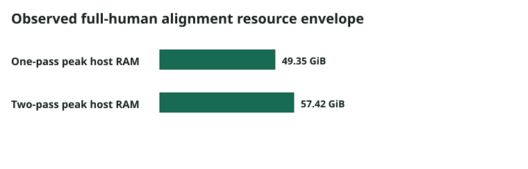
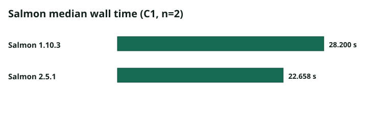
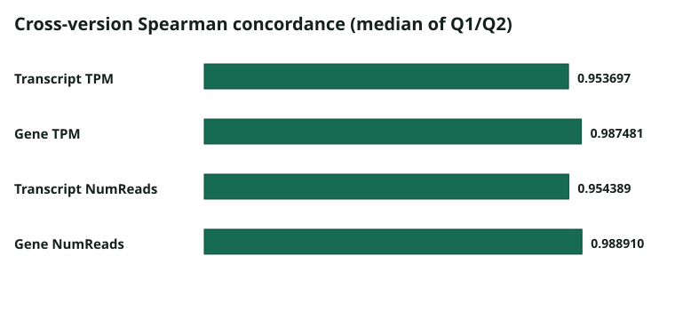
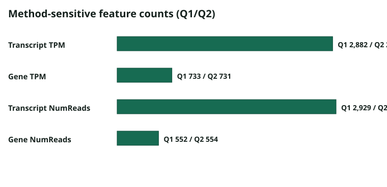

検証済みの観測結果
検証結果に基づく、限定的な性能情報
すべての数値は、SHA-256で検証したqualification evidenceから生成しています。1台の実行環境と固定入力で得た結果であり、一般的なCPU/GPU速度向上を示すものではありません。
ヒト全量データでのGPUアラインメント

| プロファイル | 計算資源 | ホストRAMの観測ピーク | VRAMピーク | 独立したアラインメント時間 | 結果 |
|---|---|---|---|---|---|
| one-pass | 42 GB / 12 CPUコア | 52,991,762,432 B (49.35 GiB) | 11,598 MiB | 独立した値なし | 正常に完了 |
| two-pass Basic | 96 GB / 12 CPUコア | 61,657,542,656 B (57.42 GiB) | 11,606 MiB | 850秒（14分10秒） | 正常に完了。cgroupピークは80,275,611,648 B |
この結果は1台の検証環境で得たものです。Harako-RNAseqは処理内容が異なるため、対応条件をそろえたCPU STARベンチマークではありません。一般的な速度向上率は示しておらず、再試行や再開を含む経過時間も純粋なベンチマークには使用していません。
Salmonの処理時間中央値

| バージョン | 経過時間の中央値 | 反復性 |
|---|---|---|
| 1.10.3 | 28.1998923805 s | 高い一致を示しますが、数値は完全には一致しません。 |
| 2.5.1 | 22.6584244570 s | 完全に同一の結果を再現しました。 |
1.10.3を2.5.1で割った経過時間中央値の比は1.2445654566でした。n=2のため、一般的な性能推定には使用できません。
Salmonバージョン間の一致度

| 指標 | Q1 Spearman | Q2 Spearman | 中央値 |
|---|---|---|---|
| 転写産物TPM | 0.9537426073 | 0.9536519157 | 0.9536972615 |
| 遺伝子TPM | 0.9874856268 | 0.9874762280 | 0.9874809274 |
| 転写産物NumReads | 0.9544253338 | 0.9543532364 | 0.9543892851 |
| 遺伝子NumReads | 0.9889113990 | 0.9889087428 | 0.9889100709 |
Salmonバージョンの違いに影響を受けた特徴量

| 指標 | Q1特徴量 | Q2特徴量 |
|---|---|---|
| 転写産物TPM | 2,882 | 2,883 |
| 遺伝子TPM | 733 | 731 |
| 転写産物NumReads | 2,929 | 2,925 |
| 遺伝子NumReads | 552 | 554 |
Salmon 2.5.1は新しい解析系列の既定です。Salmon 1.10.3も互換性のため選択できますが、反復間で高い一致を示す一方、数値は完全には一致しません。異なるバージョンで得た結果を、バージョン差を考慮せずに同一系列へ統合しないでください。各Runには、バージョン、イメージ、インデックス、オプション、実行順を記録します。
機械可読の数値と、非公開情報を除いた出典の記録は、public-benchmark-summary.jsonとevidence-source-map.jsonで確認できます。